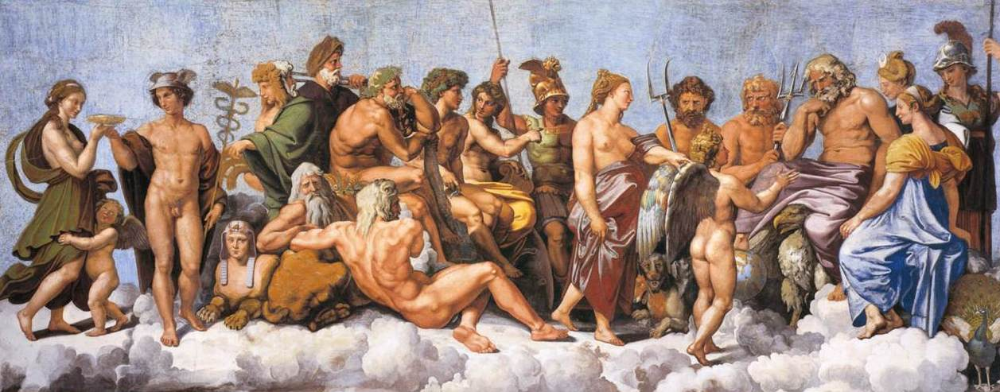
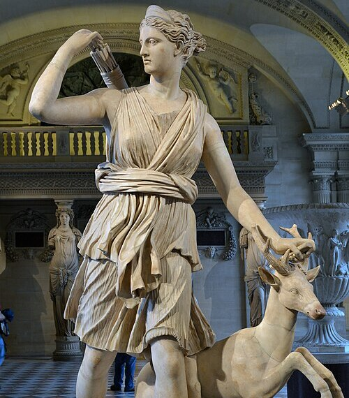

Олимпийские боги — в древнегреческой мифологии боги третьего поколения (после изначальных богов и титанов — богов первого и второго поколений), верховные божества, обитавшие на горе Олимп. Традиционно их 12, классический список звучал так: Аполлон, Арес, Артемида, Афина, Афродита, Гера, Гестия, Гермес, Гефест, Деметра, Зевс, Посейдон.

Вместе с тем, состав «двенадцати» не был каноническим в древнегреческой теологии. В зависимости от местных культов состав двенадцатичленного пантеона менялся. В частности, таких богов в разное время насчитывалось как двенадцать, так и тринадцать, и четырнадцать. Помимо двенадцати олимпийцев в Древней Греции было много других различных культовых группировок двенадцати богов. Самое раннее свидетельство греческой религиозной практики с участием двенадцати богов появляется не ранее конца VI века до н. э. Согласно Фукидиду, алтарь двенадцати богов был установлен на Афинской агоре архонтом Писистратом Младшим (сыном тирана и архонта Гиппия и внуком тирана Писистрата) ок. 522 г. до н. э. Алтарь стал центральной точкой начала отсчёта расстояния от Афин до культовых мест и прибежищ.
В число олимпийцев входили дети Кроноса и Реи (называемые Крониды):

Зевс, бог грома и молний.

Гера, покровительница брака.
Посейдон, бог морской стихии.
Аид, владыка Царства Мёртвых.
Деметра, богиня плодородия.
Гестия, богиня домашнего очага.
А также потомки Зевса:
Афродита, богиня любви и красоты.
Гефест, бог огня и кузнечного ремесла.
Аполлон, бог света, покровитель искусств.

Артемида, богиня охоты.
Дионис, бог виноделия и веселья.
| Бог |
Атрибут |
| Зевс |
Щит и двусторонний топор |
| Гера |
Покрывало, диадема, павлин и гранат. |
| Посейдон |
Трезубец |
| Аид |
Двузубые вилы |
| Деметра |
Снопы пшеницы, корзины с цветами и фруктами |
| Гестия |
Очаг |
| Афина |
Шлем |
| Персефона |
гранатовые зёрна |
| Афродита |
Пояс |
| Гефест |
Кузнечный прибор |
| Гермес |
Крылатые сандалии |
| Аполлон |
Солнце |
| Арес |
Горящий факел и копьё |
| Артемида |
Лань и медведица |
| Дионис |
Вино |